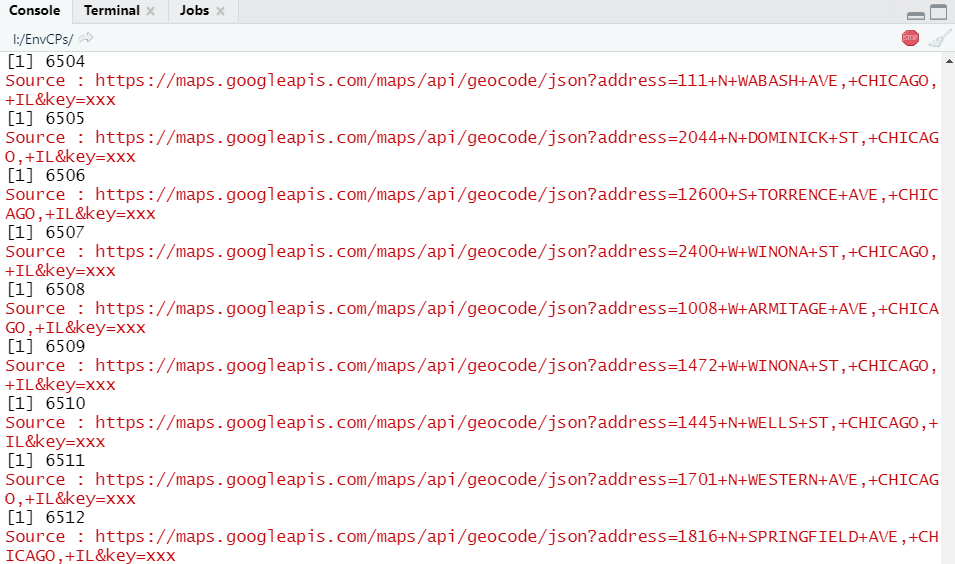

Data Wrangling
Data and Data Structure
Data Source
I got this data form my senior in my research group. The name of the data is “CDPH_Environmental_Complaints”, which indicates the data is form California Department of Public Health(CDPH), and the content is about the environmental complaints in Chicago.
You can click here to download this data.
Data Structure
Firstly, we need to load the libraries.
Then load the raw data and make it as tibble class:
RawData <- read.csv("I://FinalProject/DATA/CDPH_Environmental_Complaints.csv",header = T)
RawData_tbl <- as_tibble(RawData)Look into the structure of the data:
## [1] "COMPLAINT.ID" "COMPLAINT.TYPE" "ADDRESS" "STREET.NUMBER.FROM"
## [5] "STREET.NUMBER.TO" "DIRECTION" "STREET.NAME" "STREET.TYPE"
## [9] "INSPECTOR" "COMPLAINT.DATE" "COMPLAINT.DETAIL" "INSPECTION.LOG"
## [13] "DATA.SOURCE" "Modified.Date" "LATITUDE" "LONGITUDE"
## [17] "LOCATION"Get the categories of the complaints.
## [1] "Abandoned Site" "ABANDONED SITE"
## [3] "Air Pollution Work Order" "AIR POLLUTION WORK ORDER"
## [5] "Asbestos Work Order" "ASBESTOS WORK ORDER"
## [7] "CONSTRUCTION AND DEMOLITION" "Illegal Dumping Work Order"
## [9] "ILLEGAL DUMPING WORK ORDER" "Noise Complaint"
## [11] "NOISE COMPLAINT" "Other"
## [13] "Permits Issued by DOE Work Order" "PERMITS ISSUED BY DOE WORK ORDER"
## [15] "Recycling Work Order" "RECYCLING WORK ORDER"
## [17] "Service Stations/Storage Tanks Work Order" "SERVICE STATIONS/STORAGE TANKS WORK ORDER"
## [19] "Toxics Hazardous Materials Work Order" "TOXICS HAZARDOUS MATERIALS WORK ORDER"
## [21] "Vehicle Idling Work Order" "VEHICLE IDLING WORK ORDER"
## [23] "Water Pollution" "WATER POLLUTION"After the sort, we find out every category has a capitalized name and a lower case name instead of the “Other”.
Summary
- 1 Data Structure
- 1.1 The more useful contents are: “COMPLAINT.ID, COMPLAINT.TYPE, ADDRESS, COMPLAINT.DATE, COMPLAINT.DETAIL, LATITUDE, LONGITUDE, LOCATION” .
- 1.2 The most useful content to me is the “COMPLAINT.TYPE”.
- 2 Problems of Data
- 2.1 There are some categories of “COMPLAINT.TYPE” have different names, but the meanings are the same.
- 2.2 Some complaints lost the coordinates, but the addresses are accurate.
Data Wrangling
Correct the categories of CPs.TYPE
Rename all categories to upper case.
RawData_tbl$COMPLAINT.TYPE <- toupper(RawData_tbl$COMPLAINT.TYPE)
CATOfCPs_1<-unique(RawData_tbl$COMPLAINT.TYPE)
sort(CATOfCPs_1)## [1] "ABANDONED SITE" "AIR POLLUTION WORK ORDER"
## [3] "ASBESTOS WORK ORDER" "CONSTRUCTION AND DEMOLITION"
## [5] "ILLEGAL DUMPING WORK ORDER" "NOISE COMPLAINT"
## [7] "OTHER" "PERMITS ISSUED BY DOE WORK ORDER"
## [9] "RECYCLING WORK ORDER" "SERVICE STATIONS/STORAGE TANKS WORK ORDER"
## [11] "TOXICS HAZARDOUS MATERIALS WORK ORDER" "VEHICLE IDLING WORK ORDER"
## [13] "WATER POLLUTION"Change the class of “COMPLAINT.DATE” to date
Check the date of the data
## [1] "character"Change the character type to Date type
Check the date range
## [1] "1993-01-04" "2020-06-30"Address to Coordinate
Due to recording or no reason, the coordinates of many complaints in raw data are missing, so we need a path to get the coordinates by addresses. Here I use the “geocode” function in package “ggmap”
Add the libraries
## Warning: package 'ggmap' was built under R version 4.0.3## Google's Terms of Service: https://cloud.google.com/maps-platform/terms/.## Please cite ggmap if you use it! See citation("ggmap") for details.## Warning: package 'httr' was built under R version 4.0.3Data selection
A2C_DATA_tbl <- RawData_tbl
A2C_DATA_tbl_1 <- A2C_DATA_tbl %>%
select(COMPLAINT.ID,COMPLAINT.TYPE,ADDRESS,COMPLAINT.DATE,COMPLAINT.DETAIL,LATITUDE,LONGITUDE,LOCATION)Since the Google service is blocked, which is needed using the “geocode”, so we need to set the proxy in RStudio first.
set_config(
use_proxy(url="127.0.0.1",
port=1080, username = NULL,password = NULL,)
#I'm using Shadowsocks as my VPN client, to anyone confused about how to set the value of each arguments, you need to find the information in your VPN client.
)Then we need to register our Google Map API service by the “key”
Click here to see how to get the Google API and the key.(An international credit card is needed)
I highly recommend you that do not save your key in your script, otherwise you may get a large credit card bill if someone else use your key!!!
Then we do the translation one by one with the NA check
for(i in 1:nrow(A2C_DATA_tbl_1)){
print(i)
if(is.na(A2C_DATA_tbl_1$LATITUDE[i])){
result <- geocode(A2C_DATA_tbl_1$ADDRESS[i], output = "latlona", source = "google")
A2C_DATA_tbl_1$LONGITUDE[i] <- as.numeric(result[1])
A2C_DATA_tbl_1$LATITUDE[i] <- as.numeric(result[2])
#Check if the raw data already have the coordinates, if not:assgin it by result, else: keep unchanged.
#A2C_DATA_tbl_1$geoAddress[i] <- as.character(result[3])
}else{
next
}
}Here is how it looks like when running the script(49890 in total) 
Save it as a csv file named “A2C_DATA_tbl_1.csv”
Show bold
Show italics
Make a link:
Colored text:
Green text size 2
Red text size 3
Blue text size 4
Show section break line: Z ***
List:
- 1
- 1.1
- 1.2
- 2
Insert a figure:

Insert a table:
| Column1 | Column2 | Column3 |
|---|---|---|
| 1 | 2 | 3 |
| 4 | 5 | 6 |